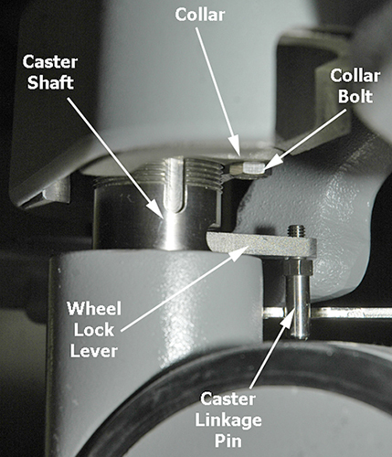
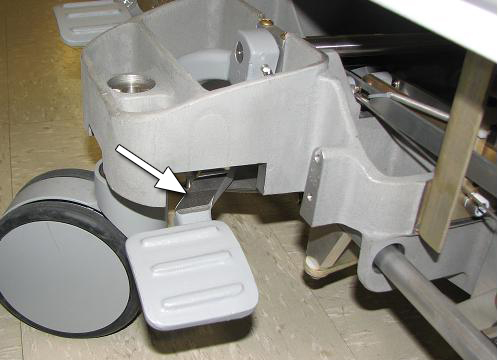

Operating Documentation
Direction 5670006, Rev# 1
Discovery MR750w GEM Service Methods
Module Version 7.0, Version Date 7/25/11
Operating Documentation |
| Required Persons | Preliminary Reqs | Procedure | Finalization |
|---|---|---|---|
| 2 | Not Applicable | 15 to 30 per caster |
| Item | Qty | Effectivity | Part# | Manufacturer | |
|---|---|---|---|---|---|
| Nonmagnetic Service Tool Kit | 1 | - | 5112581 | - | |
| Nonferrous Level | 1 | - | - | - | |
| 6.5 in. Block of Wood, minimum | 1 | - | - | - | |
| 3/8 and 7/16 in. Wrenches | 1 each | - | - | - | |
| Item | Qty | Effectivity | Part# | Manufacturer |
|---|---|---|---|---|
| Loctite® 242 Threadlocker | 1 | - | See FRU manual. | - |
| Alcohol Pads | 1 box | - | 46-183039P1 | - |
| Item | Qty | Effectivity | Part# | Manufacturer | |
|---|---|---|---|---|---|
| Wheel, Caster | 1 | - | See FRU Manual. | - | |
| Pedal Top Rubber | 1 | - | See FRU Manual. | - | |
| ||||
| Possible Back injury! | ||||
| heavy lifting can result in back strain when removing the caster from the patient table. | ||||
| ensure there are two people available to perform this procedure. |
Undock the patient table and remove it from the Magnet Room.
Remove the screws from the bottom of the bellows where it attaches to the top of the front or rear base cover (depends on which caster is being replaced).
Remove the lower base covers from the patient table. Refer to Patient Table Upper Bellows and Lower Base Side Cover Removal.
Remove the front or rear base cover.
Illustration 1: Front and Rear Base Covers

| ||||
| Per factory settings, the default height for each caster from the floor to the indent is 8.2 in. (207 mm). Measure and record the height for the caster being replaced to achieve this height after replacement. The table was adjusted for levelness per the Leveling Patient Table procedure. | ||||
Disengage the rear caster brake lock pedal.
| ||||
| Save the caster linkage pin, collar, and collar bolt from the caster being replaced for reuse on the new caster. | ||||
At the caster to be replaced, use a 3/8 in. wrench to remove the caster linkage pin.
Illustration 2: Caster Linkage Pin, Collar and Bolt

| NOTE: | Illustration depicts a floor-level view looking to the left from the right underside of the caster assembly. The orientation for each of the four casters is different so record the position of the collar and bolt hole while sliding the collar down the caster shaft. |
Remove the collar bolt (shown above) using a 7/16 in. wrench.
Slide the collar down the shaft so it rests on top of the wheel lock lever.
Looking from a top-down perspective, move the wheel lock lever to the left.
Illustration 3: Wheel Lever Lock Positions

The Wheel Lock Lever has three positions:
Full Lock or Brake is the right position that locks the caster so the patient table cannot move.
Free Swivel is the middle position that allows the caster to move freely.
Steer Lock is the left position that locks the caster in a direction, but the wheels can still spin.
Use a minimum 6.5 in. block of wood to prop up the bottom of the patient table to raise it at least 2.5 in. off the floor (to establish enough clearance to remove a caster), and turn the caster counterclockwise until it releases from the caster assembly.
Illustration 4: Positioning Block of Wood at Front of Table

Illustration 5: Positioning Block of Wood at Rear of Table

| ||||
| Avoid placing the collar onto the caster shaft upside down during caster replacement, which will result in the collar bolt hole not matching up with the bolt hole on the bottom of the caster base assembly. Before removing the collar from the caster shaft: | ||||
Place a mark on the bottom of the collar for easy identification of placement, then remove the collar.
Attach the collar to the new caster, reusing the caster linkage pin, collar, and collar bolt from the old caster. (Refer to your note regarding the correct orientation of the collar on the caster shaft.)
| ||||
| The pin should be captured inside the caster linkage before threading into the caster lever. | ||||
Thread the new caster into the caster base by turning it clockwise.
Return the table to all four casters on the floor, and measure the height of the new caster to achieve a measurement of 8.2 in. (207 mm). Refer to Leveling Patient Table. Use a nonferrous level to check the levelness of the patient table, and make the appropriate adjustments.
Slide the collar up the caster shaft to its home position, wiggle the caster until the bolt holes line up, and rebolt the collar to the caster base.
Apply Loctite 242 and replace the caster linkage pin on the new caster.
Move the wheel lever lock to the free-swivel or middle position.
Replace the caster base cover and patient table lower base cover.
Dock the patient table and check the levelness.
Remove the lower side covers from the patient table.
Remove the rear base cover shown in Illustration 1.
Remove the old rubber piece from the pedal, and clean the contact area with isopropyl alcohol.
Position and install the new rubber piece as shown below. (The replacement is a self-adhesive backed rubber piece.)
Illustration 6: Pedal Top Rubber Piece

Ensure the caster brakes and steer lock work properly.